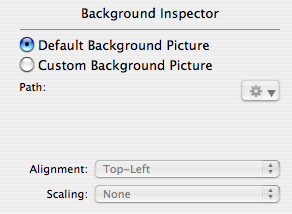
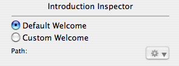
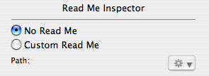
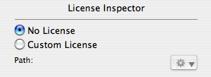

Specifying the Interface
Within your package you can specify the following optional interface resources, each of which can be localized:
| Name: | Title |
| What it is: | The title of the install displayed in Installer.app. |
| Defined in PackageMaker: | Installer Interface tab |
| Location in .pkg: | Contents/Resources/*.lproj/Description.plist |
| Name: | Description |
| What it is: | If the package is bundled in a metapackage, the description is displayed as the package description in Installer.app. |
| Defined in PackageMaker: | Installer Interface tab |
| Location in .pkg: | Contents/Resources/*.lproj/Description.plist |
| Name: | Background Picture |
| What it is: |
An image file to display in the background on the Installer.app window. Must be one of the following formats: .jpg, .tif, .tiff, .gif, .pict, .eps, or .pdf. You can specify the scaling and position of the image within the window. This can be done in the PackageMaker user interface or by specifying the The legal values for The legal values for |
| Defined in PackageMaker: | Window > Show Interface Editor menu item |
|  | |
| Location in .pkg: | Contents/Resources/*.lproj/background.[jpg|tif|tiff|gif|pict|eps|pdf] |
| Name: | Welcome |
| What it is: | The content initially shown to the user by Installer.app. Can be .rtf, .rtfd, .html, or .txt. This content should be short, as it will not be scrollable. |
| Defined in PackageMaker: | Window > Show Interface Editor menu item |
|  | |
| Location in .pkg: | Contents/Resources/*.lproj/Welcome.[rtf|rtfd|html|txt] |
| Name: | Read Me |
| What it is: | Read me content is shown to the user after the welcome content. Can also be .rtf, .rtfd, .html, or .txt. The readme will be made scrollable if necessary, so it can be as long as required. |
| Defined in PackageMaker: | Window > Show Interface Editor menu item |
|  | |
| Location in .pkg: | Contents/Resources/*.lproj/ReadMe.[rtf|rtfd|html|txt] |
| Name: | License Agreement |
| What it is: | The License agreement is shown after the read me. Can also be .rtf, .rtfd, .html, or .txt. Installer.app will require the user to agree to the agreement before proceeding. |
| Defined in PackageMaker: | Window > Show Interface Editor menu item |
|  | |
| Location in .pkg: | Contents/Resources/*.lproj/License.[rtf|rtfd|html|txt] |
Resources not specified within PackageMaker should be placed in an “Install_Resources” directory within the root when building the package, as seen below:
- Install_Resources - English.lproj License.rtf ReadMe.rtfd - French.lproj License.rtf ReadMe.rtfd